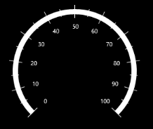

Ticks
Ticks help you to identify the gauge’s data value by marking the gauge scale in regular increments. The Interval property is used to calculate the tick count for a scale. Like ticks, small ticks are calculated by using the MinorTicksPerInterval property.
A tick’s length, stroke, and stroke thickness are set by the TickLength, TickStroke, and TickStrokeThickness UI properties. Like ticks, small ticks use similar UI properties to set the SmallTickLength, SmallTickStroke, and SmallTickStrokeThickness.
Code Example:
[XAML]
<syncfusion:SfCircularGauge x:Name="gauge">
<syncfusion:SfCircularGauge.MainScale>
<syncfusion:CircularScale
Interval="20"
MinorTicksPerInterval="3"
TickLength="20"
TickStroke="White"
TickStrokeThickness="2"
SmallTickLength="10"
SmallTickStroke="White"
SmallTickStrokeThickness="1"
>
</syncfusion:CircularScale>
</syncfusion:SfCircularGauge.MainScale>
</syncfusion:SfCircularGauge>
[C#]
SfCircularGauge circularGauge = new SfCircularGauge();
CircularScale _mainscale = new CircularScale();
_mainscale.Interval = 20;
_mainscale.MinorTicksPerInterval = 3;
_mainscale.TickLength = 20;
_mainscale.TickStroke = new SolidColorBrush(Colors.White);
_mainscale.TickStrokeThickness = 2;
_mainscale.SmallTickLength = 10;
_mainscale.SmallTickStroke = new SolidColorBrush(Colors.Black);
_mainscale.SmallTickStrokeThickness = 1;
circularGauge.MainScale = _mainscale;
this.Grid.Children.Add(circularGauge);
Screenshot:
| { |
markdownify } |
Tick Shape Customization
The shape of the Scales Major and Minor ticks can be set by using TickShape property and it’s includes following option.
Code Example:
[XAML]
<syncfusion:SfCircularGauge x:Name=”gauge”>
<syncfusion:SfCircularGauge.Scales >
<syncfusion:CircularScale x:Name="CircularScale"
TickShape="Triangle"
Interval="10"
MinorTicksPerInterval="1"
TickLength="20"
TickStroke="White"
TickStrokeThickness="3"
SmallTickLength="10"
SmallTickStroke="White"
SmallTickStrokeThickness="3"
StartAngle="135"
SweepAngle="270"
StartValue="0"
EndValue="100">
</syncfusion:CircularScale>
</syncfusion:SfCircularGauge.Scales>
</syncfusion:SfCircularGauge>
[C#]
SfCircularGauge circularGauge = new SfCircularGauge();
CircularScale scale = new CircularScale();
scale.Interval = 10;
scale.MinorTicksPerInterval = 1;
scale.TickShape = TickShape.Triangle;
scale.TickLength = 20;
scale.TickStroke = new SolidColorBrush(Colors.White);
scale.TickStrokeThickness = 3;
scale.SmallTickLength = 10;
scale.StartValue = 0;
scale.EndValue = 100;
scale.SmallTickStroke = new SolidColorBrush(Colors.White);
scale.SmallTickStrokeThickness = 3;
circularGauge.Scales.Add(scale);
this.Grid.Children.Add(circularGauge);
Screenshot:
{  |
markdownify } |
TickPosition
The ticks in the scale can be placed inside the scale, outside the scale, or across the scale by selecting one of the options available in the TickPosition property. These options are:
Code Example:
[XAML]
<syncfusion:SfCircularGauge x:Name="gauge">
<syncfusion:SfCircularGauge.MainScale>
<syncfusion:CircularScale TickPosition="Cross"
TickLength="25" SmallTickLength="15">
</syncfusion:CircularScale>
</syncfusion:SfCircularGauge.MainScale>
</syncfusion:SfCircularGauge>
[C#]
SfCircularGauge circularGauge = new SfCircularGauge();
CircularScale _mainscale = new CircularScale();
_mainscale.TickPosition = TickPosition.Cross;
_mainscale.TickLength = 25;
_mainscale.SmallTickLength = 15;
circularGauge.MainScale = _mainscale;
this.Grid.Children.Add(circularGauge);
Screenshot:
| {  | markdownify } |